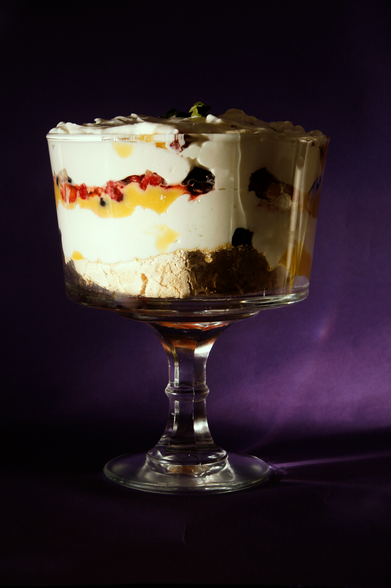

Back to Index
Trifle

Ingredients
- 1 packet of sponge fingers
- 1 packet of jelly (flavor of your choice)
- 1 cup of custard
- 1 cup of whipped cream
- Fresh fruits (e.g., strawberries, raspberries, blueberries)
Instructions
- Prepare the jelly according to the packet instructions and let it set in the fridge.
- In a trifle dish, layer the sponge fingers at the bottom.
- Pour the set jelly over the sponge fingers.
- Add a layer of custard on top of the jelly.
- Top with whipped cream and fresh fruits.
- Chill in the fridge for at least 2 hours before serving.